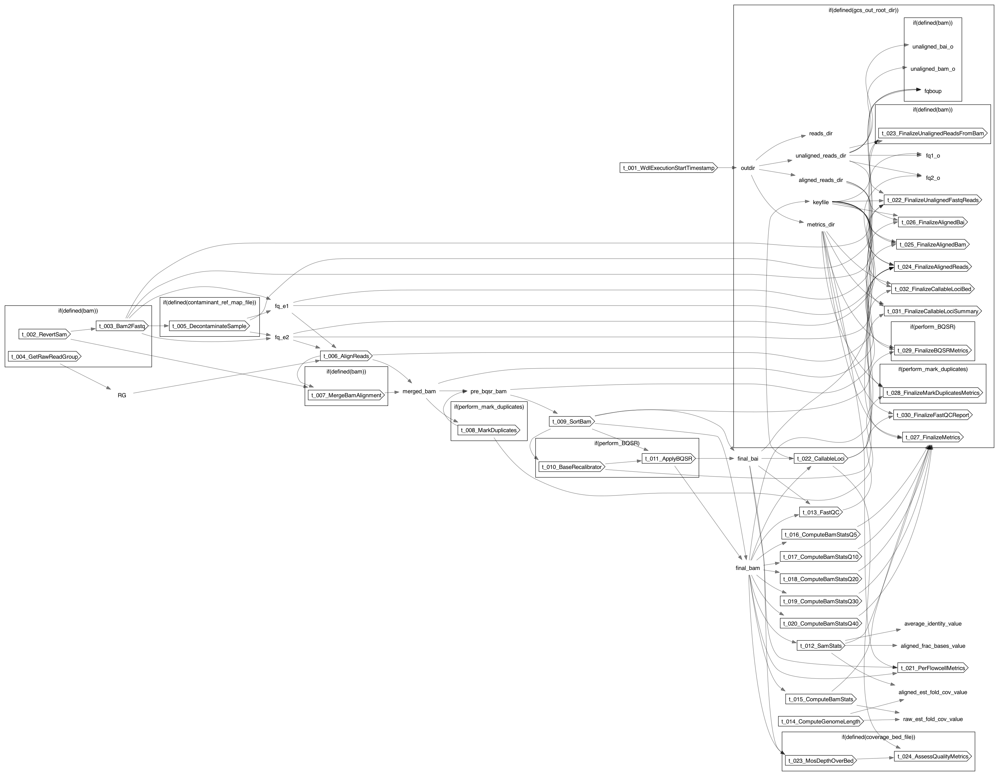

SRFlowcell
SRFlowcell
- author
- Jonn Smith
- description
- This workflow preprocesses short read flowcell data in preparation for variant calling. This workflow contains the following steps: 1) Sam -> Fastq (if necessary), 2) Alignment to reference with bwa-mem2 (https://github.com/bwa-mem2/bwa-mem2), 3) Mark Duplicate reads, 4) Recalibrate base quality scores.
Inputs
Required
LB(String, required)SM(String, required): Sample name for the given bam file.dir_prefix(String, required): Directory prefix to use for finalized location.ref_map_file(File, required): Reference map file for the primary reference sequence and auxillary file locations.
Optional
bai(File?): Index forbam.bammust be defined if this argument is. This argument andbamare mutually exclusive withfq_end1andfq_end2bam(File?): Bam file containing reads to align and process.baimust be defined if this argument is. This argument andbaiare mutually exclusive withfq_end1andfq_end2contaminant_ref_map_file(File?): Reference map file for the contaminant reference sequence and auxillary file locations.contaminant_ref_name(String?): Name for the contaminant reference.coverage_bed_file(File?): BED file containing regions to calculate coverage metrics for.fq_end1(File?): FASTQ file containing end 1 of the short read data to process.fq_end2must be defined if this argument is. This argument andfq_end2are mutually exclusive withbamandbaifq_end2(File?): FASTQ file containing end 2 of the short read data to process.fq_end1must be defined if this argument is. This argument andfq_end1are mutually exclusive withbamandbaigcs_out_root_dir(String?): GCS Bucket into which to finalize outputs. If no bucket is given, outputs will not be finalized and instead will remain in their native execution location.t_002_RevertSam.runtime_attr_override(RuntimeAttr?)t_003_Bam2Fastq.bam_index(File?)t_003_Bam2Fastq.reference_dict(File?)t_003_Bam2Fastq.reference_fasta(File?)t_003_Bam2Fastq.reference_fasta_index(File?)t_003_Bam2Fastq.runtime_attr_override(RuntimeAttr?)t_004_GetRawReadGroup.runtime_attr_override(RuntimeAttr?)t_005_DecontaminateSample.input_bai(File?)t_005_DecontaminateSample.input_bam(File?)t_006_AlignReads.runtime_attr_override(RuntimeAttr?)t_007_MergeBamAlignment.runtime_attr_override(RuntimeAttr?)t_008_MarkDuplicates.read_name_regex(String?)t_008_MarkDuplicates.runtime_attr_override(RuntimeAttr?)t_008_MarkDuplicates.sorting_collection_size_ratio(Float?)t_009_SortAlignedDuplicateMarkedBam.runtime_attr_override(RuntimeAttr?)t_010_BaseRecalibrator.runtime_attr_override(RuntimeAttr?)t_011_ApplyBQSR.runtime_attr_override(RuntimeAttr?)t_012_SamStats.runtime_attr_override(RuntimeAttr?)t_013_FastQC.runtime_attr_override(RuntimeAttr?)t_014_ComputeGenomeLength.runtime_attr_override(RuntimeAttr?)t_015_ComputeBamStats.qual_threshold(Int?)t_015_ComputeBamStats.runtime_attr_override(RuntimeAttr?)t_016_ComputeBamStatsQ5.runtime_attr_override(RuntimeAttr?)t_017_ComputeBamStatsQ10.runtime_attr_override(RuntimeAttr?)t_018_ComputeBamStatsQ20.runtime_attr_override(RuntimeAttr?)t_019_ComputeBamStatsQ30.runtime_attr_override(RuntimeAttr?)t_020_ComputeBamStatsQ40.runtime_attr_override(RuntimeAttr?)t_022_CallableLoci.runtime_attr_override(RuntimeAttr?)t_022_FinalizeUnalignedFastqReads.runtime_attr_override(RuntimeAttr?)t_023_FinalizeUnalignedReadsFromBam.runtime_attr_override(RuntimeAttr?)t_023_MosDepthOverBed.runtime_attr_override(RuntimeAttr?)t_024_AssessQualityMetrics.runtime_attr_override(RuntimeAttr?)t_024_FinalizeAlignedReads.runtime_attr_override(RuntimeAttr?)t_025_FinalizeAlignedBam.name(String?)t_025_FinalizeAlignedBam.runtime_attr_override(RuntimeAttr?)t_026_FinalizeAlignedBai.name(String?)t_026_FinalizeAlignedBai.runtime_attr_override(RuntimeAttr?)t_027_FinalizeMetrics.runtime_attr_override(RuntimeAttr?)t_028_FinalizeBQSRMetrics.runtime_attr_override(RuntimeAttr?)t_029_FinalizeFastQCReport.keyfile(File?)t_029_FinalizeFastQCReport.name(String?)t_029_FinalizeFastQCReport.runtime_attr_override(RuntimeAttr?)t_030_FinalizeCallableLociSummary.name(String?)t_030_FinalizeCallableLociSummary.runtime_attr_override(RuntimeAttr?)t_031_FinalizeCallableLociBed.name(String?)t_031_FinalizeCallableLociBed.runtime_attr_override(RuntimeAttr?)t_005_DecontaminateSample.t_004_RevertSam.runtime_attr_override(RuntimeAttr?)t_005_DecontaminateSample.t_005_Bam2Fastq.bam_index(File?)t_005_DecontaminateSample.t_005_Bam2Fastq.reference_dict(File?)t_005_DecontaminateSample.t_005_Bam2Fastq.reference_fasta(File?)t_005_DecontaminateSample.t_005_Bam2Fastq.reference_fasta_index(File?)t_005_DecontaminateSample.t_005_Bam2Fastq.runtime_attr_override(RuntimeAttr?)t_005_DecontaminateSample.t_006_GetRawReadGroup.runtime_attr_override(RuntimeAttr?)t_005_DecontaminateSample.t_007_AlignReads.runtime_attr_override(RuntimeAttr?)t_005_DecontaminateSample.t_008_ExtractDecontaminatedReads.runtime_attr_override(RuntimeAttr?)t_005_DecontaminateSample.t_009_ExtractContaminatedReads.runtime_attr_override(RuntimeAttr?)t_005_DecontaminateSample.t_010_SortDecontaminatedReads.runtime_attr_override(RuntimeAttr?)t_005_DecontaminateSample.t_011_SortContaminatedReads.runtime_attr_override(RuntimeAttr?)t_005_DecontaminateSample.t_012_CreateFastqFromDecontaminatedReads.bam_index(File?)t_005_DecontaminateSample.t_012_CreateFastqFromDecontaminatedReads.reference_dict(File?)t_005_DecontaminateSample.t_012_CreateFastqFromDecontaminatedReads.reference_fasta(File?)t_005_DecontaminateSample.t_012_CreateFastqFromDecontaminatedReads.reference_fasta_index(File?)t_005_DecontaminateSample.t_012_CreateFastqFromDecontaminatedReads.runtime_attr_override(RuntimeAttr?)t_005_DecontaminateSample.t_013_FinalizeContaminatedBam.name(String?)t_005_DecontaminateSample.t_013_FinalizeContaminatedBam.runtime_attr_override(RuntimeAttr?)t_005_DecontaminateSample.t_014_FinalizeContaminatedBamIndex.name(String?)t_005_DecontaminateSample.t_014_FinalizeContaminatedBamIndex.runtime_attr_override(RuntimeAttr?)t_005_DecontaminateSample.t_015_FinalizeDecontaminatedFq1.name(String?)t_005_DecontaminateSample.t_015_FinalizeDecontaminatedFq1.runtime_attr_override(RuntimeAttr?)t_005_DecontaminateSample.t_016_FinalizeDecontaminatedFq2.name(String?)t_005_DecontaminateSample.t_016_FinalizeDecontaminatedFq2.runtime_attr_override(RuntimeAttr?)t_005_DecontaminateSample.t_017_FinalizeDecontaminatedUnpaired.name(String?)t_005_DecontaminateSample.t_017_FinalizeDecontaminatedUnpaired.runtime_attr_override(RuntimeAttr?)t_021_PerFlowcellMetrics.AlignedFlagStats.runtime_attr_override(RuntimeAttr?)t_021_PerFlowcellMetrics.AlignedReadMetrics.runtime_attr_override(RuntimeAttr?)t_021_PerFlowcellMetrics.FFCoverageFullDist.keyfile(File?)t_021_PerFlowcellMetrics.FFCoverageFullDist.runtime_attr_override(RuntimeAttr?)t_021_PerFlowcellMetrics.FFCoverageGlobalDist.keyfile(File?)t_021_PerFlowcellMetrics.FFCoverageGlobalDist.runtime_attr_override(RuntimeAttr?)t_021_PerFlowcellMetrics.FFCoverageQuantized.keyfile(File?)t_021_PerFlowcellMetrics.FFCoverageQuantized.runtime_attr_override(RuntimeAttr?)t_021_PerFlowcellMetrics.FFCoverageQuantizedCsi.keyfile(File?)t_021_PerFlowcellMetrics.FFCoverageQuantizedCsi.runtime_attr_override(RuntimeAttr?)t_021_PerFlowcellMetrics.FFCoverageQuantizedDist.keyfile(File?)t_021_PerFlowcellMetrics.FFCoverageQuantizedDist.runtime_attr_override(RuntimeAttr?)t_021_PerFlowcellMetrics.FFCoverageRegionDist.keyfile(File?)t_021_PerFlowcellMetrics.FFCoverageRegionDist.runtime_attr_override(RuntimeAttr?)t_021_PerFlowcellMetrics.FFCoverageRegions.keyfile(File?)t_021_PerFlowcellMetrics.FFCoverageRegions.runtime_attr_override(RuntimeAttr?)t_021_PerFlowcellMetrics.FFCoverageRegionsCsi.keyfile(File?)t_021_PerFlowcellMetrics.FFCoverageRegionsCsi.runtime_attr_override(RuntimeAttr?)t_021_PerFlowcellMetrics.FFDepthSummaries.keyfile(File?)t_021_PerFlowcellMetrics.FFDepthSummaries.runtime_attr_override(RuntimeAttr?)t_021_PerFlowcellMetrics.FFYieldAligned.keyfile(File?)t_021_PerFlowcellMetrics.FFYieldAligned.runtime_attr_override(RuntimeAttr?)t_021_PerFlowcellMetrics.MakeChrIntervalList.runtime_attr_override(RuntimeAttr?)t_021_PerFlowcellMetrics.MosDepth.runtime_attr_override(RuntimeAttr?)t_021_PerFlowcellMetrics.MosDepth.window_size(Int?)t_021_PerFlowcellMetrics.SummarizeDepth.runtime_attr_override(RuntimeAttr?)
Defaults
DEBUG_MODE(Boolean, default=false): If true, will add extra logging and extra debugging outputs.perform_BQSR(Boolean, default=true): If true, will perform Base Quality Score Recalibration. If false will not recalibrate base qualities.platform(String, default="illumina"): Platform on which the sample for the given bam file was sequenced.t_001_WdlExecutionStartTimestamp.date_format(String, default="%Y%m%d_%H%M%S_%N")t_005_DecontaminateSample.DEBUG_MODE(Boolean, default=false): If true, will add extra logging and extra debugging outputs.t_011_ApplyBQSR.bin_base_qualities(Boolean, default=true)t_011_ApplyBQSR.emit_original_quals(Boolean, default=true)t_013_FastQC.num_cpus(Int, default=4)t_022_CallableLoci.min_base_quality(Int, default=20)t_022_CallableLoci.min_mapping_quality(Int, default=10)t_024_AssessQualityMetrics.min_callable_fraction(Float, default=0.5)t_024_AssessQualityMetrics.min_coverage(Float, default=5)t_024_AssessQualityMetrics.min_coverage_threshold_regions(Float, default=0.2)t_005_DecontaminateSample.t_001_WdlExecutionStartTimestamp.date_format(String, default="%Y%m%d_%H%M%S_%N")t_005_DecontaminateSample.t_007_AlignReads.skip_sort(Boolean, default=false)t_005_DecontaminateSample.t_009_ExtractContaminatedReads.extra_args(String, default="")
Outputs
fq1(File)fq2(File)fq_unpaired(File?)unaligned_bam(File?)unaligned_bai(File?)aligned_bam(File)aligned_bai(File)contaminated_bam(File?)contaminated_bam_index(File?)num_reads(Float)num_bases(Float)raw_est_fold_cov(Float)read_length(Float)read_qual_mean(Float)read_qual_median(Float)num_reads_Q5(Float)num_reads_Q10(Float)num_reads_Q20(Float)num_reads_Q30(Float)num_reads_Q40(Float)aligned_num_reads(Float)aligned_num_bases(Float)aligned_frac_bases(Float)aligned_est_fold_cov(Float)aligned_read_length(Float)insert_size_average(Float)insert_size_standard_deviation(Float)pct_properly_paired_reads(Float)average_identity(Float)fastqc_report(File)callable_loci_summary(File)callable_loci_bed(File)qc_status(String?)qc_message(String?)
Dot Diagram
